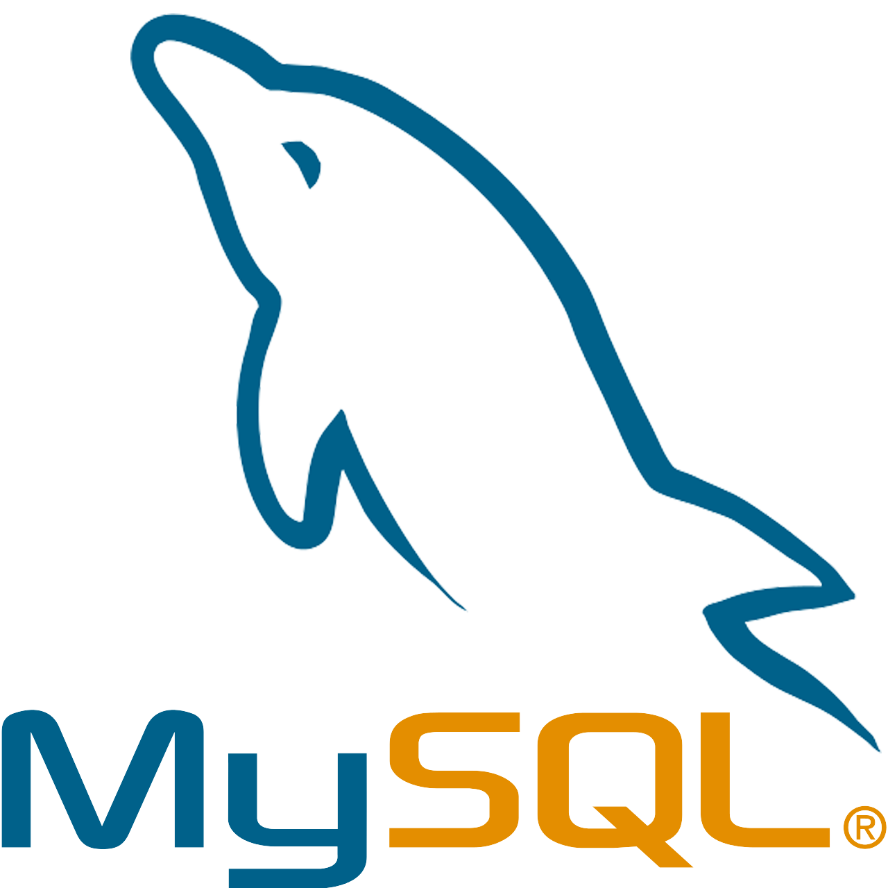

¡Hola! Soy Antonio Canux, un apasionado desarrollador web con experiencia en HTML, CSS y JavaScript. Me encanta crear sitios web atractivos y funcionales que brinden una excelente experiencia de usuario. En este portafolio, encontrarás algunos de mis proyectos más destacados, así como información sobre mis habilidades y logros. ¡Gracias por visitar mi portafolio!

Soy desarrollador web enfocado en crear experiencias digitales que no solo funcionen bien, sino que también se vean bien. Trabajo con Python, HTML, CSS y JavaScript, combinando lógica y creatividad en cada proyecto. Fuera del código, me apasiona la música, la fotografía y el fútbol, cosas que influyen bastante en mi forma de pensar y crear. Me gusta aprender constantemente, experimentar y mejorar en cada proyecto que realizo. Disfruto involucrarme en todo el proceso de desarrollo, desde la idea hasta el resultado final, siempre buscando que cada sitio tenga calidad, estilo y una buena experiencia para quien lo usa.





La página presenta toda la información necesaria de forma clara y atractiva, incluyendo el line-up, horarios, ubicación y venta de entradas. El desarrollo de la página se realizó utilizando HTML y CSS, asegurando una experiencia de usuario fluida y visualmente atractiva.

En este proyecto, desarrollé un portafolio profesional utilizando HTML y CSS. El portafolio está diseñado para mostrar mis habilidades, proyectos y logros de manera clara y atractiva. Implementé un diseño responsivo para asegurar que el portafolio se vea bien en dispositivos móviles y de escritorio.
 LinkedIn
LinkedIn
 Instagram
Instagram
 WhatsApp
WhatsApp